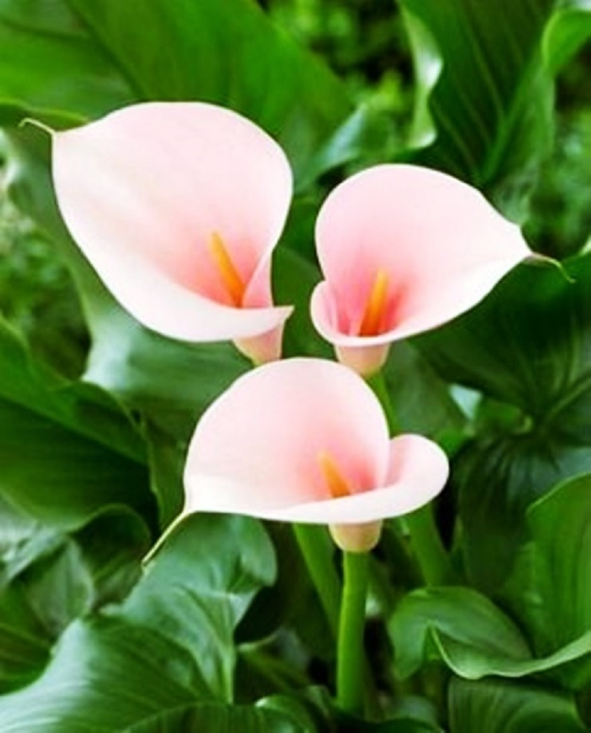
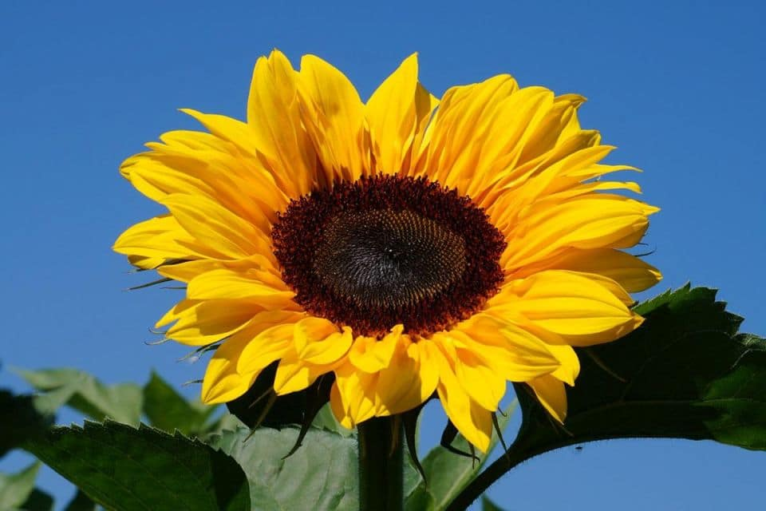

Rosa

Las rosas son flores que pertenecen a la familia de las rosáceas. Cuyo número ronda el centenar de especies. Son aromáticas, tienen espinas y dependiendo la especie pueden ser de color blanco, rosa, amarillo, naranja, rojo, azul o verde.
Has clic para saber más de la rosa
Cala

La Cala es una flor bellísima, ya que la procedencia de la palabra Cala es de origen Griego kalos y significa bello.Es una planta que pertenece a la familia de las Aráceas.La flor de cala es conocida por muchos nombres como, Cartucho, Lirio de agua, Aro de Etiopia, La Cala de Agua, Alcatraz y otros más. Flor de cala también tienen un significado dependiendo del color.
Has clic para saber más de la cala
Girasol

Planta originaria de América del Norte dónde las antiguas comunidades indígenas y las actuales lo consideran una planta sagrada puesto que va girando a lo largo del día para orientarse hacia el sol. Se trata de unas flores que pueden llegar a medir seis metros, de color amarillo anaranjado en cuyo centro se crean las semillas que una vez maduras pueden ser consumidas a modo de pipas.
Has clic para saber más del girasol